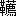

［＃ページの左右中央］
故郷の山に眠れる母の靈に
［＃改丁］
阿古屋の珠は年古りて其うるみいよいよ深くその色ますます
美はしといへり。わがうた詞拙く
節おどろおどろしく、
十年經て光失せ、
二十年すぎて
香去り、今はたその姿大方散りぼひたり。昔上田秋成は年頃いたづきける
書深き井の底に沈めてかへり見ず、われはそれだに得せず。ことし
六十あまり二つの老を重ねて
白髮かき垂り齒脱けおち見るかげなし。ただ若き日の思出のみぞ花やげる。あはれ、うつろなる此ふみ、いまの世に見給はん人ありやなしや。
ひるの月み空にかゝり
淡々し白き紙片
うつろなる影のかなしき
おぼつかなわが古きうた
あらた代の光にけたれ
かげろふのうせなんとする
昭和十三年三月
清白しるす
［＃改丁］
この廢墟にはもう祈祷も呪咀もない、感激も怨嗟もない、雰圍氣を失つた死滅世界にどうして生命の草が生え得よう、若し敗壁斷礎の間、奇しくも何等かの發見があるとしたならば、それは固より發見者の創造であつて、廢滅そのものゝ再生ではない。
昭和四年三月
志摩にて
清白
［＃改丁］
蓆戸に
秋風吹いて
河添の
旅籠屋さびし
哀れなる
旅の
男は
夕暮の
空を
眺めて
いと
低く
歌ひはじめぬ
亡母は
處女と
成りて
白き
額月に
現はれ
亡父は
童子と
成りて
圓き
肩銀河を
渡る
柳洩る
夜の
河白く
河越えて
煙の
小野に
かすかなる
笛の
音ありて
旅人の
胸に
觸れたり
故郷の
谷間の
歌は
續きつゝ
斷えつゝ
哀し
大空の
返響の
音と
地の
底のうめきの
聲と
交りて
調は
深し
旅人に
母はやどりぬ
若人に
父は
降れり
小野の
笛煙の
中に
かすかなる
節は
殘れり
旅人は
歌ひ
續けぬ
嬰子の
昔にかへり
微笑みて
歌ひつゝあり
［＃改ページ］
古翁しま
國の
野にまじり
覆盆子摘み
門に
來て
生鈴の
百層を
驕りよぶ
白晶の
皿をうけ
鮮けき
乳を
灑ぐ
六
月の
飮食に
けたゝまし
虹走る
清涼の
里いでゝ
松に
行き
松に
去る
大海のすなどりは
ちぎれたり
繪卷物
鳴門の
子海の
幸
魚の
腹を
胸肉に
おしあてゝ
見よ
十人
同音にのぼり
來る
［＃改ページ］
月に
沈める
白菊の
秋冷まじき
影を
見て
千曲少女のたましひの
ぬけかいでたるこゝちせる
佐久の
平の
片ほとり
あきわの
里に
霜やおく
酒うる
家のさゞめきに
まじる
夕の
鴈の
聲
蓼科山の
彼方にぞ
年經るをろち
棲むといへ
月はろ／″＼とうかびいで
八谷の
奧も
照らすかな
旅路はるけくさまよへば
破れし
衣の
寒けきに
こよひ
朗らのそらにして
いとゞし
心痛むかな
［＃改ページ］
雨の
渡に
順禮の
姿寂しき
夕間暮
霧の
山路に
駕舁の
かけ
聲高き
朝朗
旅は
興ある
頭陀袋
重きを
土産に
歸れ
君
惡魔木暗に
ひそみつゝ
人の
財を
ねらふとも
天女泉に
下り
立ちて
小瓶洗ふも
目に
入らむ
山蛭膚に
吸ひ
入らば
谷に
藥水
溢るべく
船醉海に
苦しむも
龍神臟を
醫すべし
鳥の
尸に
火は
燃えて
山に
地獄の
吹嘘聲
潮に
異香
薫ずれば
海に
微妙の
蜃氣樓
暮れて
驛の
町に
入り
旅籠の
門を
くゞる
時
米の
玄きに
驚きて
里に
都を
説く
勿れ
女房語部
背すりて
村の
歴史を
講ずべく
主膳夫
雉子を
獲て
旨き
羮
とゝのへむ
芭蕉の
草鞋
ふみしめて
圓位の
笠を
頂けば
風俗君の
鹿島立
翁さびたる
可笑しさよ
［＃改ページ］
黒潮の
流れて
奔る
沖中に
漂ふ
島は
眠りたる
巨人ならずや
頭のみ
波に
出して
峨々として
岩重れば
目や
鼻や
顏何ぞ
奇なる
裸々として
樹を
被らず
聳えたる
頂高し
鳥啼くも
魚群れ
飛ぶも
雨降るも
日の
出入るも
青空も
大海原も
春と
夏秋と
冬とも
眠りたる
巨人は
知らず
幾千年頑たり
※［＃「山＋咢」、U+5D3F、27-7］たり
［＃改ページ］
いさゝむら
竹打戰ぐ
丘の
徑の
果にして
くねり
可笑しくつら／＼に
しげるいそべの
磯馴松
花も
紅葉もなけれども
千鳥あそべるいさごぢの
渚に
近く
下り
立てば
沈みて
青き
海の
石
貝や
拾はん
莫告藻や
摘まんといひしそのかみの
歌をうたひて
眞玉なす
いさごのうへをあゆみけり
波と
波とのかさなりて
砂と
砂とのうちふれて
流れさゞらぐ
聲きくに
いせをの
蜑が
耳馴れし
音としもこそおぼえざれ
社をよぎり
寺をすぎ
鈴振り
鳴らし
鐘をつき
海の
小琴にあはするに
澄みてかなしき
簫となる
御座の
灣西の
方
和具の
細門に
船泛けて
布施田の
里や
青波の
潮を
渡る
蜑の
兒等
われその
船を
泛べばや
われその
水を
渡らばや
しかず
纜解き
放ち
今日は
和子が
伴たらん
見ずやとも
邊に
越賀の
松
見ずやへさきに
青の
峰
ゆたのたゆたのたゆたひに
潮の
和みぞはかられぬ
和みは
潮のそれのみか
日は
麗らかに
志摩の
國
空に
黄金や
集ふらん
風は
長閑に
英虞の
山
花や
縣をよぎるらん
よしそれとても
海士の
子が
歌うたはずば
詮ぞなき
歌ひてすぐる
入海の
さし
出の
岩もほゝゑまん
言葉すくなき
入海の
波こそ
君の
友ならめ
大海原に
男のこらは
あまの
少女は
江の
水に
さても

の
衣ならで
船路間近き
藻の
被衣
女だてらに
水底の
黄泉國にも
通ふらむ
黄泉の
醜女は
嫉妬あり
阿古屋の
貝を
敷き
列ね
顏美き
子等を
誘ひて
岩の
櫃もつくるらん
さばれ
［＃「さばれ」はママ］海なる
底ひには
父も
沈みぬちゝのみの
母も
伏しぬ
柞葉の
生れ
乍らに
水潛る
歌のふしもやさとるらん
櫛も
捨てたり
砂濱に
簪も
折りぬ
岩角に
黒く
沈める
眼のうちに
映るは
海の
泥のみ
若きが
膚も
潮沫の
觸るゝに
早く
任せけむ
いは
間にくつる
捨錨
それだに
里の
懷しき
哀歌をあげぬ
海なれば
花草船を
流れすぎ
をとめの
群も
船の
子が
袖にかくるゝ
秋の
夢
夢なればこそ
千尋なす
海のそこひも
見ゆるなれ
それその
石の
圓くして
白きは
星の
果ならん
いまし
蜑の
子艪拍子の
など
亂聲にきこゆるや
われ
今海をうかがふに
とくなが
顏は
蒼みたり
ゆるさせたまへ
都人
きみのまなこは
朗らかに
いかなる
海も
射貫くらん
傳へきくらく
此海に
男のかげのさすときは
かへらず
消えず
潛女の
深き
業とぞ
怖れたる
われ
微笑にたへやらず
肩を
叩いて
童形の
神に
翼を
疑ひし
それもゆめとやいふべけん
島こそ
浮べくろ／″＼と
この
入海の
島なれば
いつ
羽衣の
落ち
沈み
飛ばず
翔らず
成りぬらむ
見れば
紫日を
帶びて
陽炎ひわたる
玉のつや
つや／＼われはうけひかず
あまりに
輕き
姿かな
白ら
松原小貝濱
泊つるや
小舟船越の
昔は
汐も
通ひけん
これや
月日の
破壞ならじ
潮のひきたる
煌砂
うみの
子ならで
誰かまた
かゝる
汀に
仄白き
鏡ありとや
思ふべき
大海原と
入海と
こゝに
迫りて
海神が
こゝろなぐさや
手すさびや
陸を
細めし
鑿の
業
今細雲の
曳き
渡し
紀路は
遙けし
三熊野や
白木綿咲ける
海岸に
落つると
見ゆる
夕日かな
［＃改ページ］
園の
主に
導かれ
庭の
置石石燈籠
物古る
木立築山の
景有る
所うち
過ぎて
池のほとりを
來て
見れば
棚につくれる
藤の
花
紫深き
彩雲の
陰にかくるゝ
鳥屋にして
番の
孔雀砂を
踏み
優なる
姿睦つるゝよ
地に
曳く
尾羽の
重くして
歩はおそき
雄の
孔雀
雌鳥を
見れば
嬌やかに
柔和の
性は
具ふれど
綾に
包める
毛衣に
己れ
眩き
風情あり
雌鳥雄鳥の
立竝び
砂にいざよふ
影と
影
飾り
乏き
身を
恥ぢて
雌鳥は
少し
退けり
落羽は
見えず
砂の
上
清く
掃きたる
園守が
帚の
痕も
失せやらず
一つ
落ち
散る
藤浪の
花を
啄む
雄の
孔雀
長き
花總地に
垂れて
歩めば
遠し
砂原
見よ
君來れ
雄の
孔雀
尾羽擴ぐるよあなや
今
あな
擴げたりこと／″＼く
こゝろ
籠めたる
武士の
晴の
鎧に
似たるかな
花の
宴宮内の
櫻襲のごときかな
一つの
尾羽をながむれば
右と
左にたち
別れ
みだれて
靡く
細羽の
金絲の
縫を
捌くかな
圓く
張りたる
尾の
上に
圓くおかるゝ
斑を
見れば
雲の
峯湧く
夏の
日に
炎は
燃ゆる
日輪の
半ば
蝕する
影の
如
さても
面は
濃やかに
げに
天鵞絨の
軟かき
これや
觸れても
見まほしの
指に
空しき
心地せむ
いとゞ
和毛のゆたかにて
胸を
纒へる
光輝と
紫深き
羽衣は
紺地の
紙に
金泥の
文字を
透すが
如くなり
冠に
立てる
二本の
羽は
何物直にして
位を
示す
名鳥の
これ
頂の
飾なり
身はいと
小さく
尾は
廣く
盛なるかな
眞白なる
砂の
面を
歩み
行く
君それ
砂といふ
勿れ
この
鳥影を
成す
所
妙の
光を
眼にせずや
仰げば
深し
藤の
棚
王者にかざす
覆蓋の
形に
通ふかしこさよ
四方に
張りたる
尾の
羽の
めぐりはまとふ
薄霞
もとより
鳥屋のものなれど
鳥屋より
廣く
見ゆるかな
何事ぞこれ
圓らかに
張れる
尾羽より
風出でゝ
見よ
漣の
寄るごとく
羽と
羽とを
疾くぞ
過ぐ
天つ
錦の
羽の
戰ぎ
香りの
草はふまずとも
香らざらめやその
和毛
八百重の
雲は
飛ばずとも
響かざらめやその
羽がひ
獅子よ
空しき
洞をいで
小暗き
森の
巖角に
その
鬣をうち
振ふ
猛き
姿もなにかせむ
鷲よ
御空を
高く
飛び
日の
行く
道の
縱横に
貫く
羽を
搏ち
羽ぶく
雄々しき
影もなにかせむ
誰か
知るべき
花蔭に
鳥の
姿をながめ
見て
朽ちず
亡びず
價ある
永久の
光に
入りぬとは
誰か
知るべきこゝろなく
庭逍遙の
目に
觸れて
孔雀の
鳥屋の
人の
世に
高き
示しを
與ふとは
時は
滅びよ
日は
逝けよ
形は
消えよ
世は
失せよ
其處に
殘れるものありて
限りも
知らず
極みなく
輝き
渡る
樣を
見む
今われ
假りにそのものを
美しとのみ
名け
得る
振放け
見れば
大空の
日は
午に
中たり
南の
高き
雲間に
宿りけり
織りて
隙なき
藤浪の
影は
幾重に
匂へども
紅燃ゆる
天津日の
焔はあまり
強くして
梭と
飛び
交ひ
箭と
亂れ
銀より
白き
穗を
投げて
これや
孔雀の
尾の
上に
盤渦卷きかへり
迸り
或は
露と
溢れ
零ち
或は
霜とおき
結び
彼處に
此處に
戲るゝ
千々の
日影のたゞずまひ
深き
淺きの
差異さへ
色薄尾羽にあらはれて
涌來る
彩の
幽かにも
末は
朧に
見ゆれども
盡きぬ
光の
泉より
ひまなく
灌ぐ
金の
波
と
見るに
近き
池の
水
あたりは
常のまゝにして
風なき
晝の
藤の
花
靜かに
垂れて
咲けるのみ
今夏の
日の
初めとて
菖蒲刈り
葺く
頃なれば
力あるかな
物の
榮
若き
緑や
樹は
繁り
煙は
深し
園の
内
石も
青葉や
萌え
出でん
雫こぼるゝ
苔の
上
雫も
堅き
思あり
思へば
遠き
冬の
日に
かの
美しき
尾も
凍る
寒き
塒に
起臥して
北風通ふ
鳥屋のひま
雙の
翼うちふるひ
もとよりこれや
靈鳥の
さすがに
羽は
亂さねど
塵のうき
世に
捨てられて
形は
薄く
胸は
痩せ
命死ぬべく
思ひしが
かくばかりなるさいなみに
鳥はいよ／＼
美しく
奇しき
戰や
冬は
負け
春たちかへり
夏來り
見よ
人にして
桂の
葉
鳥は
御空の
日に
向ひ
尾羽を
擴げて
立てるなり
讚に
堪へたり
光景の
庭の
面にあらはれて
雲を
驅け
行く
天の
馬
翼の
風の
疾く
強く
彼處蹄や
觸れけんの
雨も
溶き
得ぬ
深緑
澱未だ
成らぬ
新造酒の
流を
見れば
倒しまに
底こと／″＼くあらはれて
天といふらし
盃の
落すは
淺黄瑠璃の
河
地には
若葉の
神飾り
誰行くらしの
車路ぞ
朝と
夕との
雙手もて

ぐる
珠は
陰光
溶けて
去なんず
春花に
くらべば
強き
夏花や
成れるや
陣に
驕慢の
汝孔雀よ
華やかに
又かすかにも
濃やかに
千々の
千々なる
色彩を
間なく
時なく
眩ゆくも
標はし
示すたふとさよ
草は
靡きぬ
手を
擧げて
木々は
戰ぎぬ
袖振りて
即ち
物の
證明なり
かへりて
思ふいにしへの
人の
生命の
春の
日に
三保の
松原漁夫の
懸る
見してふ
天の
衣
それにも
似たる
奇蹟かな
こひねがはくば
少くも
此處も
駿河とよばしめよ
斯くて
孔雀は
尾ををさめ
妻戀ふらしや
雌をよびて
語らふごとく
鳥屋の
内
花恥かしく
藤棚の
柱の
陰に
身をよせて
隱るゝ
風情哀れなり
しば／＼
藤は
砂に
落ち
ふむにわづらふ
鳥と
鳥
あな
似つかしき
雄の
鳥の
羽にまつはる
雌の
孔雀
［＃改ページ］
花賣娘名はお
仙
十七
花を
賣りそめて
十八
戀を
知りそめて
顏もほてるや
恥かしの
蝮に
噛まれて
脚切るは
山家の
子等に
驗あれど
戀の
附子矢に
傷かば
毒とげぬくも
晩からん
村の
外れの
媼にきく
昔も
今も
花賣に
戀せぬものはなかりけり
花の
蠱はす
業ならん
市に
艶なる
花賣が
若き
脈搏つ
花一枝
彌生小窓にあがなひて
戀の
血汐を
味はん
［＃改ページ］
月光の
語るらく
わが
見しは
一の
姫
古あをき
笛吹いて
夜も
深く
塔の
階級に
白々と
立ちにけり
日光の
語るらく
わが
見しは
二の
姫
香木の
髓香る
槽桁や
白乳に
浴みして
降りかゝる
花姿天人の
喜悦に
地どよみ
虹たちぬ
月光の
語るらく
わが
見しは
一の
姫
一葉舟湖にうけて
霧の
下まよひては
髮かたちなやましく
亂れけり
日光の
語るらく
わが
見しは
二の
姫
顏映る
圓柱
驕り
鳥尾を
觸れて
風起り
波怒る
霞立つ
空殿を
七
尺の
裾曳いて
黄金の
跡印けぬ
月光の
語るらく
わが
見しは
一の
姫
死の
島の
岩陰に
青白くころび
伏し
花もなくむくろのみ
冷えにけり
日光の
語るらく
わが
見しは
二の
姫
城近く
草ふみて
妻覓ぐと
來し
王子は
太刀取の
恥見じと
火を
散らす
駿足に
かきのせて
直走に
國領を
去りし
時
春風は
微吹きぬ
［＃改ページ］
律師は
麓の
寺をいでゝ
駕は
山の
上
竹の
林の
夕の
家の
門に
入りぬ
親戚誰彼
宴をたすけ
小皿の
音
厨にひゞき
燭を
呼ぶ
聲
背戸に
起る
小桶の
水に
浸すは
若菜
若菜を
切るに
爼板馴れず
新しき
刃の
痕もなければ
菱形なせる
窓の
外に
三
尺の
雪
戸を
壓して
靜かに
暮るゝ
山の
夕
夕は
樂しき
時
夕は
清き
時
夕は
美しき
時
この
夕
雪あり
この
夕
月あり
この
夕
宴あり
火の
氣弱きを
憂ひて
竈にのみ
立つな
室に
入りて
花の
人を
見よ
花の
人と
よびまゐらせて
この
夕は
名はいはず
この
夕は
名なし
律師席に
入て
霜毫威あり
長人を
煩はすに
堪へたり
夕
琥珀の
酒
酌むに
盃あり
盃の
色
紅なるを
山人驕奢に
長ずと
言ふか
紅は
紅の
芙蓉の
花の
秋の
風に
折れたる
其日
市の
小路の
店に
獲たるを
律師詩に
堪能
箱の
蓋に
紅花盃と
書して
去りぬ
紅花盃を
重ねて
雪夜の
宴
月出でたり
月出でたるに
島臺の
下暗き
島臺の
下
暗き
蓬莱の
松の
上に
斜におとす
光なれば
銀の
錫懸
用意あらむや
山の
竹より
笹を
摘みて
陶瓶の
口に
插せしのみ
王者の
調度に
似ぬは
何々
其子の
帶は
うす
紫の
友禪染の
唐縮緬か
艶ある
髮を
結ぶ
時は
風よく
形に
逆らひ
吹くと
怨ずる
恨
今無し
若き
木樵の
眉を
見れば
燭を
剪る
時
陰をうけて
額白き
人
室にあり
袴のうへに
手をうちかさね
困ずる
席は
花のむしろ
筵の
色を
評するには
まだ
唇の
紅ぞ
深き
北の
家より
南の
家に
來る
道すがら
得たる
思は
花にあらず
蜜にあらず
花よりも
蜜よりも
美しく
甘き
思は
胸に
溢れたり
雷落ちて
藪を
燒きし
時
諸手に
腕を
許せし
人は
今相對ひて
月を
挾む
盃とるを
羞る
二人は
天の
上
若き
星の
酒の
泉の
前に
臨みて
香へる
浪に
恐づる
風情
紅花盃
琥珀の
酒
白き
手より
荒き
手にうけて
百の
矢うくるも
去るな
二人
御寺の
塔の
扉に
彫れる
神女の
戲れ
笙を
吹いて
舞ふにまされる
雪夜のうたげ
律師駕に
命じて
北の
家に
行き
月下の
氷人
去りて
後
二人いさゝか
［＃「いさゝか」は底本では「いささゝか」］
容儀を
解きぬ
夜を
賞するに
律師の
詩あり
詩は
月中に
桂樹挂り
千
丈枝に
銀を
着く
銀光溢れて
家に
入らば
卜する
所
幸なりと
［＃改ページ］
五月野の
晝しらみ
瑠璃囀の
鳥なきて
草長き
南國
極熱の
日に
火ゆる
謎と
組む
曲路
深沼の
岸に
盡き
人形の
樹立見る
石の
間青き
水
水を
截る
圓肩に
睡蓮花を
分け
のぼりくる
美し
君
柔かに
眼を
開けて
玉藻髮捌け
落ち
眞素膚に
飜へる
浪
木々の
道木々に
倚り
多の
草多にふむ
葉の
裏に
虹懸り
姫の
路金撲つ
大地の
人離野
變化居る
白日時
垂鈴の
百濟物
熟れ
撓む
石の
上
みだれ
伏す
姫の
髮
高圓の
日に
乾く
手枕の
腕つき
白玉の
夢を
展べ
處女子の
胸肉は
力ある
足の
弓
五月野の
濡跡道
深沼の
小黒水
落星のかくれ
所と
傳へきく
人の
子等
空像の
數知らず
うかびくる
岸の
隈
湧き
上ぼる
高水に
いま
起る
物の
音
めざめたる
姫の
面
丹穗なす
火にもえて
たわわ
髮身を
起す
光宮玉の
人
微笑みて
下り
行く
湖の
底姫の
國
足うらふむ
水の
梯
物の
音遠ざかる
目路のはて
岸木立
晝下ちず
日の
眞洞
迷野の
道の
奧
水姫を
誰知らむ
［＃改ページ］
島國の
花柑子
高圓に
匂ふ
夜や
大渦の
荒潮も
羽をさめほゝゑめり
病める
子よ
和の
今
窓に
倚り
常花の
星村にぬかあてゝ
さめ／″＼となけよかし
生をとめ
月姫は
新なる
丹の
皿に
開命貴寶を
盛り
よろこびの
子にたびん
清らなる
身とかはり
五月野の
遠を
行く
花環虹めぐり
銀の
雨そゝぐ
［＃改ページ］
花吹雪
まぎれに
さそはれて
いでたまふ
館の
姫
蝕める
古梯
眼の
前に
櫓だつ
不開の
間
香の
物
焚きさし
採火女めく
影動き
きえにけり
夢の
華
處女の
胸にさき
きざはしを
のぼるか
諸扉
さと
開く
風のごと
くらやみに
誰ぞあるや
色蒼く
まみあけ
衣冠して
束帶の
人立てり
思ふ
今
いけにへ
百年を
人柱
えも
朽ちず
年若き
つはもの
戀人を
持ち
乍ら
うめられぬ
怪し
瞳
炎に
身は
燃えて
死にながら
輝ける
何しらん
禁制
姫の
裾
なほ
見えぬ
扉とづ
白壁に
居る
蟲
春の
日は
うつろなす
暮れにけり
［＃改ページ］
志摩の
果安乘の
小村
早手風岩をどよもし
柳道木々を
根こじて
虚空飛ぶ
斷れの
細葉
水底の
泥を
逆上げ
かきにごす
海の
病
そゝり
立つ
波の
大鋸
過げとこそ
船をまつらめ
とある
家に
飯蒸かへり
男もあらず
女も
出で
行きて
稚兒ひとり
小籠に
坐り
ほゝゑみて
海に
對へり
荒壁の
小家一村
反響する
心と
心
稚兒ひとり
恐怖をしらず
ほゝゑみて
海に
對へり
いみじくも
貴き
景色
今もなほ
胸にぞ
跳る
少くして
人と
行きたる
志摩のはて
安乘の
小村
［＃改ページ］
顏蒼白き
若者に
祕める
不思議きかばやと
村人數多來れども
彼はさびしく
笑ふのみ
前の
日村を
立出でゝ
仙者が
嶽に
登りしが
恐怖を
抱くものゝごと
山の
景色を
語らはず
傳へ
聞くらく
此河の
きはまる
所瀧ありて
其れより
奧に
入るものは
必ず
山の
祟あり
蝦蟆氣を
吹いて
立曇る
篠竹原を
分け
行けば
冷えし
掌あらはれて
項に
顏に
觸るゝとぞ
陽炎高さ二
萬尺
黄山赤山黒山の
劍を
植ゑたる
頂に
祕密の
主は
宿るなり
盆の
一日は
暮れはてゝ
淋しき
雨と
成りにけり
怪しく
光りし
若者の
眼の
色は
冴え
行きぬ
劉邦未だ
若うして
谷路の
底に
蛇を
斬りつ
而うして
彼れ
漢王の
位をつひに
贏ち
獲たり
この
子も
非凡山の
氣に
中たりて
床に
隱れども
禁を
守りて
愚鈍者に
鬼の
語を
語らはず
［＃改ページ］
わが
居る
家の
大地に
黒き
帝の
住みたまひ
地震の
踊の
優なれば
下り
來れと
勅あれど
われは
行きえず
人なれば
わが
居る
家の
大空に
白き
女王の
住みたまひ
星の
祭の
艶なれば
上り
來れと
勅あれど
われは
行きえず
人なれば
わが
居る
家の
古厨子に
遠き
御祖の
住みたまひ
とこ
降る
花のたへなれば
開けて
來れとのたまへど
われは
行きえず
人なれば
わが
居る
家の
厨内
働く
妻をよびとめて
夕の
設をたづぬるに
好める
魚のありければ
われは
行きけり
人なれば
［＃改ページ］
父よ
其手綱を
放せ
槍の
穗に
夕日宿れり
數ふればいま
秋九
月
赤帝の
力衰へ
天高く
雲野に
似たり
初陣の
駒鞭うたば
夢杳か
兜の
星も
きらめきて
東道せむ
父よ
其手綱を
放せ
狐啼く
森の
彼方に
月細くかゝれる
時に
一すぢの
烽火あがらば
勝軍笛ふきならせ
軍神わが
肩のうへ
銀燭の
輝く
下に
盃を
洗ひて
待ちね
父よ
其手綱を
放せ
髮※［＃「白＋番」、U+76A4、96-9］くきみ
老いませり
花若く
我胸踴る
橋を
斷ちて
砲おしならべ
巖高く
劍を
植ゑて
さか
落し千
丈の
崖
大雷雨奈落の
底
風寒しあゝ
皆血汐
父よ
其手綱を
放せ
君しばしうたゝ
寢のまに
繪卷物逆に
開きて
夕べ
星波間に
沈み
霧深く
河の
瀬なりて
野の
草に
亂るゝ
螢
石の
上惡氣上りて
亡跡を
君にしらせん
父よ
其手綱を
放せ
故郷の
寺の
御庭に
うるはしく
列ぶおくつき
栗の
木のそよげる
夜半に
たゞ
一人さまよひ
入りて
母上よ
晩くなりぬと
わが
額をみ
胸にあてゝ
ひたなきになきあかしなば
わが
望滿ち
足らひなん
神の
手に
抱かれずとも
父よ
其手綱を
放せ
雲うすく
秋風吹きて
萩芒高なみ
動き
軍人小松のかげに
遠祖らの
功名をゆめむ
今ぞ
時貝が
音ひゞく
初陣の
駒むちうちて
西の
方廣野を
驅らん
［＃改ページ］
使者
月毛なり
連錢なり
丈三
寸年五
歳
天上二十八
宿の
連錢
須彌三十二
相の
月毛
青龍の
前脚
白虎の
後脚
忠を
踏むか
義を
踏むか
諸蹄の
薄墨色
落花の
雪か
飛雪の
花か
生つきの
眞白栲
竹を
剥ぎて
天を
指す
兩の
耳のそよぎ
鈴を
懸けて
地に
向ふ
雙の
目のうるほひ
擧れる
筋怒れる
肉
銀河を
倒にして
膝に
及ぶ
鬣
白雲を
束ねて
草を
曳く
尾
龍蹄の
形

の
相
神馬か
天馬か
言語道斷希代なり
城主の
御親書
獻上違背候ふまじ
駿馬の主
曲事仰せ
候
城主の
執心物に
相應はず
夫れ
駿馬の
來るは
聖代第一の
嘉瑞なり
虞舜の
世に
鳳凰下り
孔子の
時に
麒麟出づるに
同じ
理世安民の
治略至らず
富國殖産の
要術なくして
名馬の
所望及び
候はず
使者
御馬の
具は
何々
水干鞍の
金覆輪
梅と
櫻の
螺鈿は
御庭の
春の
景色なり
の
縫物は
飛鳥の
孔雀七
寶の
縁飾
雲龍の
大履脊
紗の
鞍※［＃「巾＋巴」、U+5E0A、103-2］
さて
蘇芳染の
手綱とは
人車記の
故實に
出で
鐵地の
鐙は
一
葉の
船を
形容たり
※［＃「革＋面」、U+292E0、103-7］［＃ルビの「おがもひ」はママ］鞅鞦は
大總小總掛け
交ぜて
五
色の
絲の
縷糸に
漣組たる
連着懸
差繩行繩引繩の
緑に
映ゆる
唐錦
菱形轡蹄の
鐵
馬裝束の
數々を
盡して
召されうづるにても
御錠違背候ふか
駿馬の主
中々の
事に
候
駿馬の
威徳は
金銀を
忌み
候
使者
さらば
駿馬の
威徳
御物語候へ
駿馬の主
夫れ
駿馬の
威徳といつぱ
世の
常の
口強足駿
笠懸流鏑馬犬追物
遊戲狂言の
凡畜にあらず
天竺震旦古例あり
馬は
觀音の
部衆
雜阿含經にも四
種の
馬を
説かれ
六
波羅密の
功徳にて
畜類ながらも
菩薩の
行
悉陀太子金色の
龍蹄に
十
丈の
鐵門を
越え
三
界の
獨尊と
仰がれ
給ふ
帝堯の
白馬
穆王の八
駿
明天子の
徳至れり
漢の
光武は一
日に
千
里の
馬を
得
寧王朝夕馬を
畫て
桃花馬を
逸せり
異國の
譚は
多かれども
類稀なる
我宿の
一の
駿馬の
形相は
嘶く
聲落日を
中天に
囘らし
蹄の
音星辰の
夜碎くる
響あり
躍れば
長髮風に
鳴て
萬丈の
谷を
越え
馳すれば
鐵脚火を
發して
千
里の
道に
疲れず
千
斤の
鎧百
貫の
鞍
堅轡強鞭
鎧かろ／″＼
鞍ゆら／＼
轡は
噛み
碎かれ
鞭はうちをれ
飽くまで
肉の
硬き
上に
身輕の
曲馬品々の
藝
碁盤立弓杖
一
文字杭渡り
教へずして
自ら
法を
得たり
扨又絶險難所渡海登山
陸を
行けば
平地を
歩むが
如く
海に
入れば
扁舟に
棹さすに
似たり
木曾の
御嶽駒ヶ
嶽
越の
白山立山
上宮太子天馬に
騎して
梵天宮に
至り
給ひし
富士の
峯
高き
峯々嶽々
阿波の
鳴門穩戸の
瀬戸
天龍刀根湖水の
渡り
聞ゆる
急流荒波も
蹄にかけてかつし／＼
肝臆ず
駈早し
いつかな
馳り
越えつべし
そのほか
戰場の
砌は
風の
音に
伏勢を
覺り
雲を
見て
雨雪をわきまふ
先陣先駈拔駈間牒
又は
合戰最中の
時
槍矛箭種ヶ
島
面をふり
體をかはして
主をかばふ
忠と
勇は
家子郎等に
異ならず
かゝる
名馬は
奧の
牧
吾妻の
牧大山木曾
甲斐の
黒駒
その
外諸國の
牧々に
萬頭の
馬は
候ふとも
又出づべくも
侯はず
名馬の
鑑駿馬の
威徳
あゝら
有難の
我身や
候
使者
御物語奇特に
候
とう／＼
城に
立歸り
再度の
御親書
申し
請はゞやと
存じ
侯
駿馬の主
かしまじき
御使者候
及びもなき
御所望候へば
いか
程の
手立を
盡され
いくばくの
御書を
遊ばされ
候ふとも
御料には
召されまじ
法螺鉦陣太鼓
旗さし
物笠符
軍兵數多催されて
家のめぐり
十重二十重
閧の
聲あげてかこみ
候ふとも
召料には
出さじ
器量ある
大將軍にあひ
奉らば
其時こそ
駒も
榮あれ
駒主も
道々引くや
四季繩の
春は
御空の
雲雀毛
夏は
垣ほの
卯花鴇毛
秋は
落葉の
栗毛
冬は
折れ
伏す
蘆毛積る
雪毛
數多き
御馬のうちにも
言上いたして
召され
候はん
拜謁申して
駿馬を
奉らん
この
篇『
飾馬考』『
全書』『
武器考證』『
馬術全書』『
鞍鐙之辯』『
春日神馬繪圖及解』『
太平記』
及び
巣林子の
諸作に
憑る
所多し
敢て
出所を
明にす